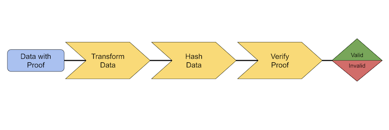

1 Dec.: the @w3c #WoT #CommunityGroup organizes a meetup focused on #SmartHomes
https://www.w3.org/events/meetings/07d67134-f9d0-4c8a-ba1e-24f25babef8c
🗓️ December@w3c: #WoT meetup, W3C workshop. More at https://www.w3.org/participate/eventscal.html
https://twitter.com/w3cdevs/status/15983007395790233655-6 Dec.: the #W3CWorkshop on #permissions takes place in #Munich 🇩🇪. Check out the workshop's agenda: https://www.w3.org/Privacy/permissions-ws-2022/schedule
https://twitter.com/w3cdevs/status/1598300742095458306🗓️ The @w3c membership is invited to vote until 14 January 2023 in the special election for the W3C Advisory Board (@ab) to fill four vacated seats as of January 2023. https://twitter.com/w3c/status/1598615366367940608
The 11 candidates are Qing An, Marcos Cáceres, @t, @npdoty, @fantasai, @annettegreiner, @tobie, @chaals, Michael Prorock, @wendy_a_reid and Jennifer Strickland
Read their nomination statements: https://www.w3.org/2022/11/ab-nominations
https://twitter.com/w3cdevs/status/1598631685507121152The W3C Advisory Board (AB) provides ongoing guidance to the @w3c team on issues of strategy, management, legal matters, process, and conflict resolution. Check out their current projects at https://www.w3.org/wiki/AB
https://twitter.com/w3cdevs/status/1598631690456268800The @w3c Verifiable Credentials #WorkingGroup publishes a #JSON Web Signature Suite created in 2020 for the Verifiable Credentials Data Integrity Proof specification #security #privacy #verifiablecredential #FPWD #timetogiveinput https://twitter.com/w3c/status/1600779507832688641
A data integrity proof provides information about the proof mechanism, parameters required to verify that proof, and the proof value itself.
The Verifiable Credential Data Integrity 1.0 document has been recently published as #FPWD: https://twitter.com/w3c/status/1595059278150254598
https://twitter.com/w3cdevs/status/1600826819313545217To verify a cryptographic proof, data is transformed, hashed, and checked for correctness.
https://twitter.com/w3cdevs/status/1600826825965375489Feedback and comments are welcome in the related #GitHub repo: https://github.com/w3c/vc-jws-2020/
https://twitter.com/w3cdevs/status/1600826829576687616Web Platform design principles have been collected during the @w3cTAG discussions in reviewing developing specifications, and build upon the Ethical Web Principles. Find out more in @hober's presentation at last #w3cTPAC: https://tess.oconnor.cx/2022/09/ethical-web-principles
The @w3cTAG opens a design review discussion on #GitHub - https://github.com/w3ctag/design-reviews/discussions/793#discussion-4636585, and encourages the community to come and ask questions relating to the "Web Platform Design Principles" or other aspects of the #WebPlatform architecture https://w3ctag.github.io/design-principles/ cc @torgo
https://twitter.com/w3cdevs/status/1601216635289079808This document by @emvco, @FIDOAlliance and @w3c, describes how the technologies in scope may be used together to address a specific use case: secure card #payment during an #ecommerce guest checkout on the Web (i.e., browser-based scenarios) #security #privacy #usability https://twitter.com/w3c/status/1602587215284027393
https://twitter.com/w3cdevs/status/160260238376643788815-16 Dec.: @svgeesus gives tips on how to escape the sRGB prison @WeyWeyWeb, in #Malaga🇪🇸 https://weyweyweb.com
https://twitter.com/w3cdevs/status/1603340385820049408🇪🇺 Apply now before 15 Feb. 23 if you are based in #Europe and looking for #funds to support your work on @w3c #WebStandards. The main topic for this 9th Open Call is "#IoT, Cloud and Edge", but also #a11y, #security, #privacy, #ontologies, etc. Read more https://www.standict.eu/index.php/standicteu-2023-9th-open-call https://twitter.com/Stand_ICT/status/1603654921387212803
https://twitter.com/w3cdevs/status/1603671786834595840👏👏👏 Congratulations to @rhiaro (@digitalbazaar), @hober (@Apple) and @LeaVerou (#W3CInvitedExpert) for their election to the @tag! https://twitter.com/w3c/status/1603684268382851072
In addition to @tag's co-chairs @timberners_lee, @plinss and @torgo, they join @cssrossen (@Microsoft), @hadleybeeman (#W3CInvitedExpert), Dapeng (Max) Liu (@AlibabaGroup) and @sangwhanmoon (@Google). @wz43rtx remains the staff contact. See https://www.w3.org/2001/tag/
https://twitter.com/w3cdevs/status/1603688843135385600The @tag provides feedback on nearly any Web related specification, including work happening outside @w3c'>@w3c. Find out how to work with the @w3c'>@w3c TAG:
https://tag.w3.org/workmode/
https://twitter.com/w3cdevs/status/1603688849040969729This specification defines 3 concepts: processing units (such as the CPU), supported sources (such as #GPU), sampling and reporting rates. Read more at https://www.w3.org/TR/2022/WD-compute-pressure-20221220/#concepts
The Compute Pressure #API defines a set of pressure states (e.g. high CPU load) delivered to a #Web #application to signal when adaptation of the workload is appropriate to ensure consistent quality of service. #timetogiveinput ! #FPWD
https://www.w3.org/TR/2022/WD-compute-pressure-20221220/ https://twitter.com/w3c/status/1605104958839349248
https://twitter.com/w3cdevs/status/1605190931912790018Feedback is welcome in the #GitHub repo! https://github.com/wicg/compute-pressure/
https://twitter.com/w3cdevs/status/1605190936081874944How to properly calculate pressure and key usage scenarios are described in this explainer: https://github.com/wicg/compute-pressure/#readme
https://twitter.com/w3cdevs/status/1605190934114828288